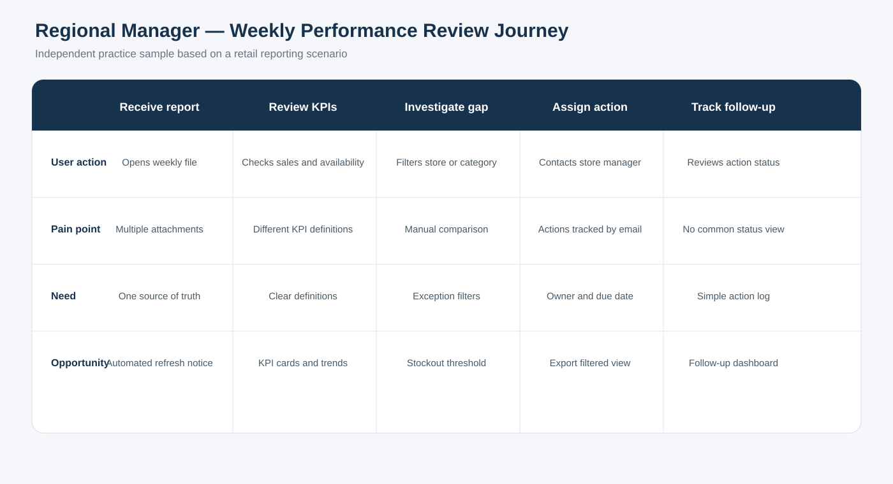
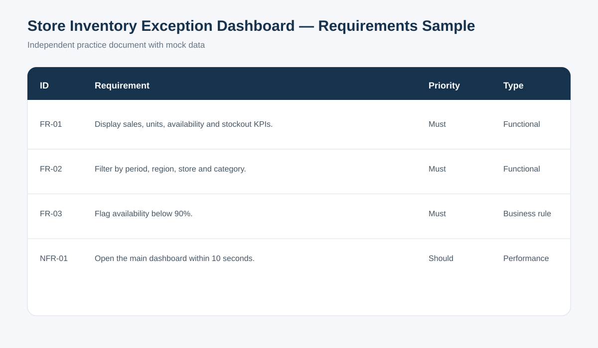

User journey sample
The journey follows a regional manager through a weekly performance review: receiving the report, reviewing KPIs, investigating gaps, assigning actions and tracking follow-up.
Why this journey was created
It connects common reporting pain points—multiple files, inconsistent definitions and email-based follow-up—to practical dashboard opportunities.
Requirements document
The downloadable requirements sample covers background, scope, stakeholders, functional and non-functional requirements, user stories, acceptance criteria, data fields and testing notes.

Practice sample: The journey and requirements use a fictional retail scenario. They are designed to show structure and communication, not to imitate a confidential business system.